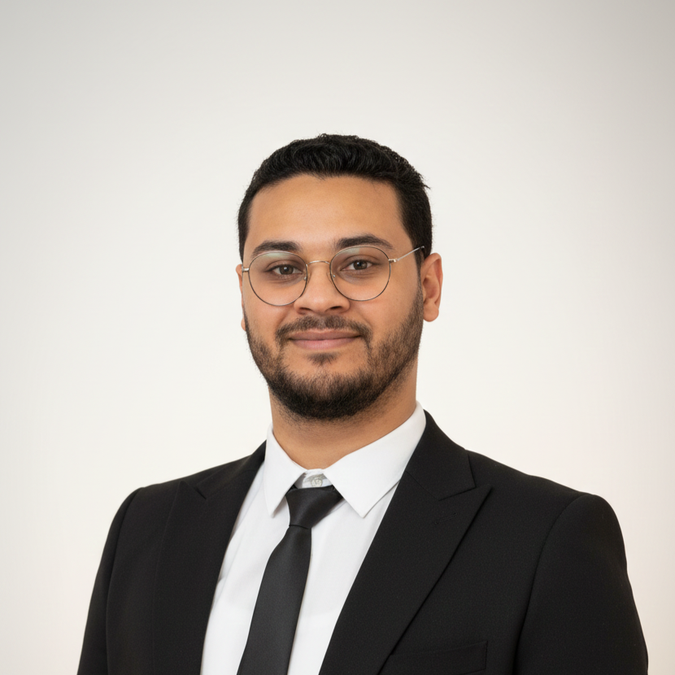

I am a Research Engineer in Medical Robotics with over 5 years of experience developing advanced multi-robot platforms for minimally invasive surgery. I hold a PhD focused on the optimal design and kinematic redundancy management of surgical robotic systems. My expertise bridges the gap between complex hardware-software integration and real-time control algorithms, specializing in ROS2, digital twins, and collaborative robotics to enhance surgical precision in challenging environments.
Design and development of a robotic assistant for percutaneous interventions, including real-time control algorithms for macro-mini systems at LS2N.
Optimized robot placement and collaborative control for minimally invasive surgery. Implemented a digital twin for real-time redundancy management.
Developed a high-performance simulator for the Franka Emika cobot dedicated to medical applications under MATLAB Simulink.
| 2025 | Conference | E. J. Guajardo-Benavides, M. A. Arteaga, J. Sandoval, and A. Trabelsi "Application of a modified DREM algorithm for the identification of payload parameters for a Franka Emika cobot." IFAC-PapersOnLine. |
| 2024 | Journal | A. Trabelsi, J. Sandoval, A. Mlika, S. Lahouar, S. Zeghloul, and M. A. Laribi. "Robot Base Placement and Tool Mounting Optimization based on Capability Map for Robot-Assistant Camera Holder." Robotica. |
| 2024 | Journal | M. Meskini, A. Trabelsi, H. Saafi, A. Mlika, M. Arsicault, J. Sandoval, S. Zeghloul, and M. A. Laribi. "Experimental Use Validation of the Master Hybrid Haptic Device Dedicated to Remote Center-of-Motion Tasks." Machines. |
| 2024 | Conference | A. Trabelsi, J. Sandoval, A. Mlika, S. Lahouar, and M. A. Laribi. "Design and Implementation of a Digital Twin for a Multi-robot Surgical Platform." ISRM. |
| 2022 | Conference | A. Trabelsi, J. Sandoval, A. Mlika, S. Lahouar, S. Zeghloul, J. Cau and M. A. Laribi. "Optimal Multi-robot Placement Based on Capability Map for Medical Applications." RAAD 2022. |
| 2021 | Conference | A. Trabelsi, J. Sandoval, M. Ghiss, and M. A. Laribi. "Development of a Franka Emika cobot simulator platform (CSP) dedicated to medical applications." RAAD 2021. |